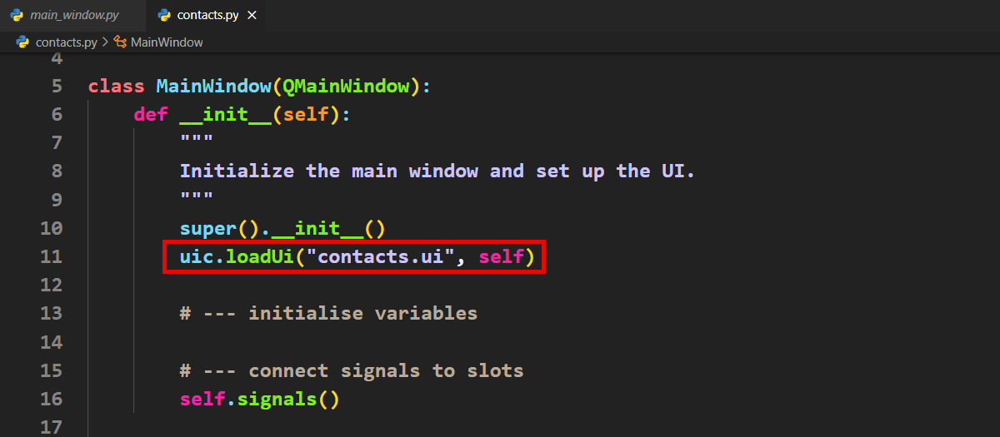
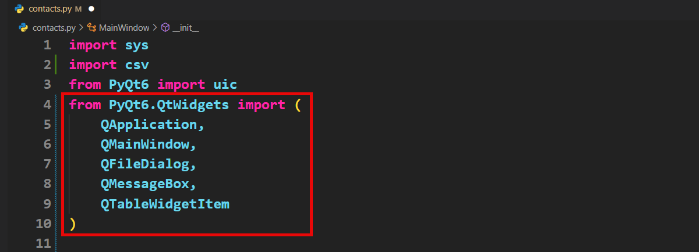

Tutorial 17 - Contact App¶
In this tutorial, you will:
TBA
New file¶
First, we need to setup your new file:
Copy your new main_window.py file, calling it contacts.py.
Change the file name to contacts.ui

Run the code to ensure the window loads.
Loading Contacts File¶
Download Contacts File¶
The first feature that we will add to our app is loading contacts from a csv file. To do this we will need a csv file with contact details.
Right mouse click on this contacts csv file
Click on save link as and then choose the same folder as your contacts.py file.
Get Contacts File Name¶
Next we will need to make a slot that opens Qt’s File Dialogue Box and gets the name of the contact file.
Add the QFileDialog to the import statements
In the Slots section create the open_contacts slot which opens the QFileDialog and retrieves the name and path of the selected file.
Read Contacts File¶
We are now going to read the csv file into the tableWidget_contacts in our UI, but we need to handle possible errors, to prevent our program from crashing.
Exception handling
Exception handling is a way for a program to deal with errors that happen while it is running. When something goes wrong, like trying to divide by zero or opening a file that doesn’t exist, the program can stop working unless the error is handled.
With exception handling, the program checks for these errors and responds to them without stopping completely. This keeps the program running or allows it to show a helpful message to the user instead of crashing.
First we need to import two new modules:
csv → reading csv files
QMessageBox → displaying error messages
Add the libraires below into your import section
Now we need to open and read the csv file. There are two likely errors we need to handle:
The user did not select a file (ie. they clicked Cancel on the dialogue box)
The csv file cannot be opened.
Add the code below to the bottom of the open_contacts slot.
Lets look at how this code handles those possible errors.
if file_path:→ will only let the program attempt to open a file when a file name has been returned from the file dialog box.try:block → attempts to open the provided file as a csv and read the contents into the data list.except Exception:block → if thetry:fails, then a dialog box will pop up with an error message.
Display Contact Details¶
Now we need to take the contacts details in the data list and write it to tableWidget_contacts. Again we need to handle possible errors, in this case where the csv file is empty.
We need to import the QTableWidgetItem module (the QtWidgets import is getting a bit long, so let’s spread it over multiple lines).

We also need to create headings for our contacts table. We will use a list to store this information.
In the
__init__add the following line.
Now we can finally read the contact details from the data list
Add the code below into the try block in the open_contact slot
Connect Signal to Slot¶
Next we will connect the signal to our completed open_contact slot.
In the signals method add the code below.
Test File Open¶
Now run your app and check the you can open the contacts.csv and that is displays 10 contacts.
New Contact Dialog¶
Now we need to add new contacts using the new_contact.ui we created. To access the new_contact.ui we need to create a NewContact class.
Create NewContact class¶
This new class is not a QDialog, not a QMainWindow, so we need to import that widget.
Change your import section
Now to create the NewContact class
After the import section add the new class definition
Display New Contact¶
Finally we need to add the new contact details to our tableWidget_contacts.
First we will create a method that will take the values in details and write them to tableWidget_contact. This isn’t a slot, so we will create a new utilities section to place this method.
At the bottom of the slots section add this code:

Then we need to execute this method when the Dialog Ok button is pressed.
In the open_contact_dialog replace the print statement with the following code.
Test New Contact¶
Run your app and add a new contact. Did the information appear correctly in your contact list?
Saving Contacts¶
Now for the final step, saving our contact list. We will use the QFileDialog to get the path for the save file. Then write the contents of the tableWidget_contacts to the file in csv format.
Getting Save File Path¶
Use the QFileDialog to get the save file path.
At the bottom of the Slots section add the following code
Save Contact to File¶
Now we need to write the content of the tableWidget_content to a csv file. We need to make sure that we have the same error handling as we did for reading a csv file.
Complete the save_content method with the code below
Connect Save Signal¶
Finally we need to connect the actionSave signal to our save_content slot.
In the signals method, add the following code.
Testing Save¶
Now to test the save function of your app.
Launch your app
Open the contacts file
Add a new contact
Save your contact file
Close the app
Launch the app again
Open the contact file
Check that your new contact is in the file.